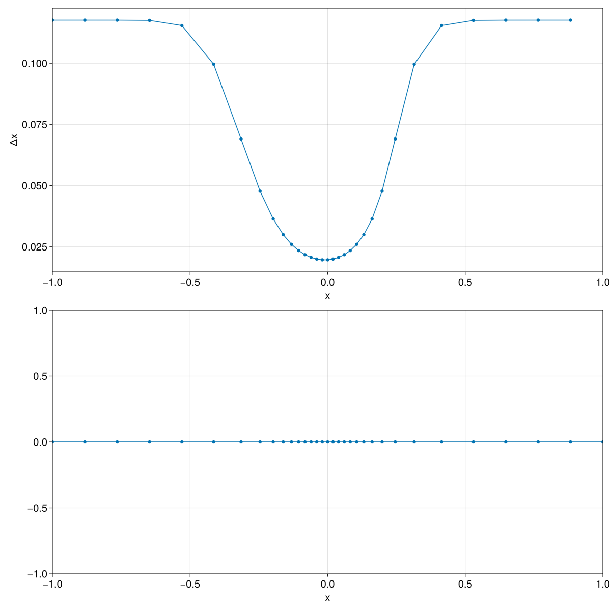
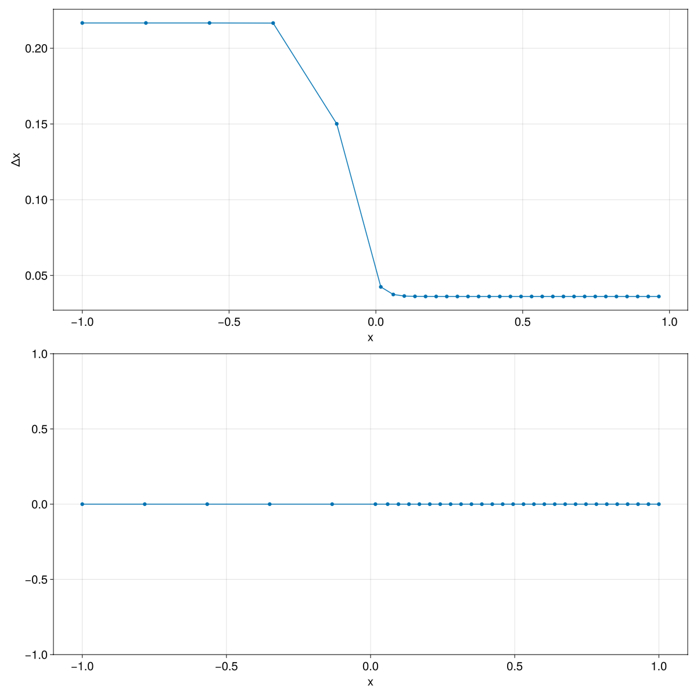

PoissonGrids.jl
PoissonGrids.jl generates one-dimensional adaptive grids from scalar monitor functions. The package currently exposes two monitor constructors, gaussian_monitor and tanh_monitor, together with the main solver solve_grid.
Overview
The solver starts from a uniform computational grid and iteratively relocates the interior physical vertices. Regions where the monitor function is larger receive more resolution in the final grid.
Examples
Gaussian Refinement
The Gaussian monitor used in this example is
\[M(x) = 1 + \alpha \exp\left(-\frac{(x - x_c)^2}{\sigma^2}\right)\]
using PoissonGrids
M = gaussian_monitor(5.0, 0.0, 0.2)
u = solve_grid(-1.0, 1.0, M, 32)33-element Vector{Float64}:
-1.0
-0.8823890336711702
-0.7647780926182741
-0.6471694071036022
-0.5296607394745593
-0.41425174407132986
-0.31463825448652616
-0.24558499538450176
-0.19783565366607384
-0.16144089762869968
⋮
0.19783565366607384
0.24558499538450176
0.31463825448652616
0.41425174407132986
0.5296607394745593
0.6471694071036022
0.7647780926182741
0.8823890336711702
1.0The returned vector u contains the grid vertices

Tanh Refinement
The tanh monitor used in this example is
\[M(x) = 1 + \frac{\alpha + \alpha \tanh\left(\kappa (x - c)\right)}{2}\]
using PoissonGrids
M = tanh_monitor(5.0, 20, 0.0)
u = solve_grid(-1.0, 1.0, M, 32)33-element Vector{Float64}:
-1.0
-0.7833053890835394
-0.566610778163781
-0.34991617908812683
-0.13329036583726533
0.016819195768858188
0.05927444963082588
0.09670989415699303
0.13312865664972978
0.1693154399391828
⋮
0.7110738509106723
0.7471896195332239
0.7833053881610618
0.8194211567935448
0.8555369254299786
0.8916526940696258
0.9277684627117142
0.9638842313554442
1.0This monitor increases smoothly across x = 0, so the grid transitions from coarser cells on the left to finer cells on the right.

Choosing a Monitor
- Use
gaussian_monitorwhen refinement should be concentrated around a localized feature. - Use
tanh_monitorwhen the mesh should transition smoothly across an interface or boundary layer.
Notes
ncis the number of cells, so the solution vector returned bysolve_gridhas lengthnc + 1.- The domain endpoints remain fixed at
xminandxmax. - A constant monitor such as
x -> 1.0reproduces a uniform grid.